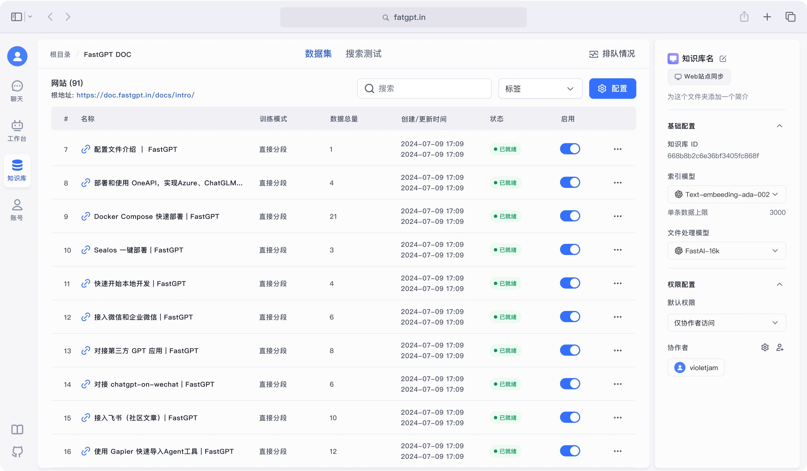
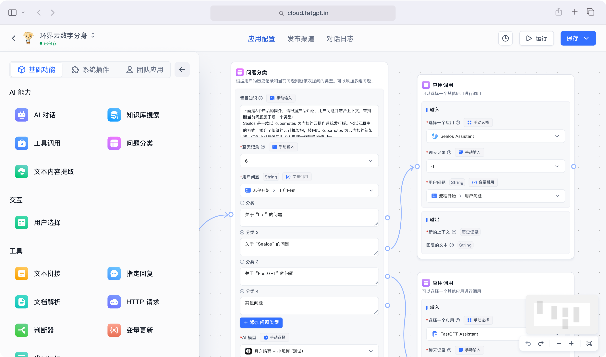
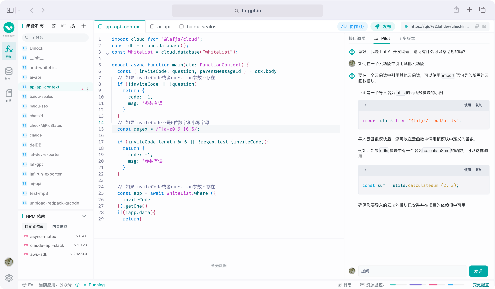

FastGPT
 项目首页
项目首页
基于 LLM 大模型的开源 AI 知识库构建平台。提供了开箱即用的数据处理、模型调用、RAG 检索、可视化 AI 工作流编排等能力，帮助您轻松构建复杂的 AI 应用。



 如何部署在线 FastGPT
如何部署在线 FastGPT
什么是 FastGPT
- FastGPT是一个基于大语言模型的开源知识库问答系统，由labring团队开发并维护。它提供了一系列开箱即用的功能，包括数据处理、模型调用、RAG(检索增强生成)检索等，让用户能够快速构建和部署智能问答应用。FastGPT的核心优势在于其灵活的工作流编排能力，用户可以通过可视化界面设计复杂的问答流程，实现个性化的AI应用场景。
功能列表
- 简单易用的可视化界面：FastGPT采用直观的可视化界面设计，为各种应用场景提供了丰富实用的功能。通过简洁易懂的操作步骤，用户可以轻松完成AI客服的创建和训练流程。
- 自动数据预处理：FastGPT提供多种数据导入途径，包括手动输入、直接分段、LLM自动处理和CSV等。它会自动对文本数据进行预处理、向量化和QA分割，从而节省手动训练时间，提升效能。
- 工作流编排：基于Flow模块的工作流编排功能，FastGPT可以帮助用户设计更加复杂的问答流程。例如，它可以查询数据库、查询库存、预约实验室等，实现复杂的业务逻辑。
- 强大的API集成：FastGPT的API接口与OpenAI官方接口对齐，可以直接接入现有的GPT应用。此外，它还可以轻松集成到企业微信、公众号、飞书等平台，方便用户在不同场景下使用FastGPT。